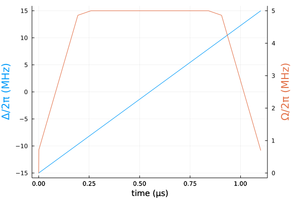
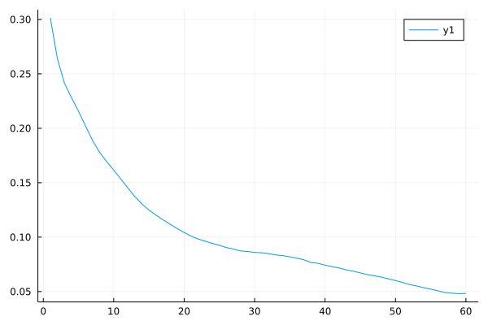
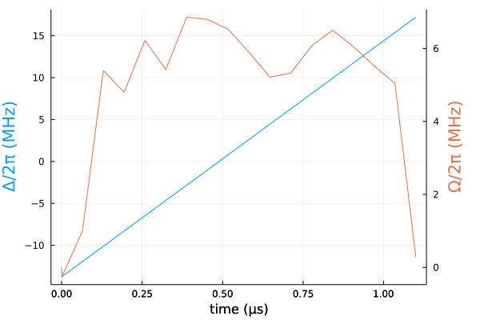

GHZ state in Rydberg atoms (CUDA)
using Sisyphus
using QuantumOptics
using LinearAlgebra
using Flux, DiffEqFlux
using Plots
using ProgressMeter
using Random
ProgressMeter.ijulia_behavior(:clear)falsebs = SpinBasis(1//2)
sx = sigmax(bs)
ni = 0.5*(identityoperator(bs) + sigmaz(bs))V = 2π*24.0
δe = -2π*4.5-28.274333882308138n_atoms = 16
bsys = tensor([bs for i in 1:n_atoms]...)
H0 = V*sum([embed(bsys, [i, j], [ni, ni])/abs(i-j)^6 for i in 1:n_atoms for j in i+1:n_atoms])
H0 -= δe*sum([embed(bsys, [i], [ni]) for i in [1, n_atoms]])
if n_atoms>8
H0 -= -2π*1.5*sum([embed(bsys, [i], [ni]) for i in [1, n_atoms]])
H0 -= -2π*1.5*sum([embed(bsys, [i], [ni]) for i in [4, n_atoms-3]])
end;
H1 = 0.5*sum([embed(bsys, [i], [sx]) for i in 1:n_atoms])
H2 = -sum([embed(bsys, [i], [ni]) for i in 1:n_atoms])function GHZ_state(n_atoms)
state = tensor([spindown(bs)⊗spinup(bs) for i in 1:Int(n_atoms/2)]...) +
tensor([spinup(bs)⊗spindown(bs) for i in 1:Int(n_atoms/2)]...)
state/sqrt(2.0)
end
ground_state(n_atoms) = tensor([spindown(bs) for i in 1:n_atoms]...)
trans = StateTransform(ground_state(n_atoms)=>GHZ_state(n_atoms))T = 1.1f0
Ω₀(t) = 2.f0π * min(5, 25 * t / T, 25 * (T - t) / T)Ω₀ (generic function with 1 method)Ω(p, t) = linear_interp(p[begin:length(p)-2], t; t0=0.f0, t1=T)
Δ(p, t) = p[end-1]*t + p[end]
n_params = 20
ts = 0:T/(n_params-2):T
θ = (vcat([Ω₀((ts[i+1] + ts[i])/2) for i=1:n_params-2], 2.f0π*[30/T, -15]))ts = 0:T/1000:T
blue = theme_palette(:auto).colors.colors[1]
red = theme_palette(:auto).colors.colors[2]
plot(ts, [Δ(θ, t)/2π for t in ts], ylabel="Δ/2π (MHz)", color=blue, yguidefont = font(blue), legend=false)
plot!(Plots.twinx(), ts, [Ω(θ, t)/2π for t in ts], ylabel="Ω/2π (MHz)", color=red, yguidefont = font(red), legend=false)
plot!(xlabel="time (μs)", right_margin = 15Plots.mm)
cost = CostFunction((x, y) -> 1.0f0 - abs2(sum(conj(x).*y)))CostFunction(var"#29#30"(), nothing)H = Hamiltonian(H0, [H1, H2], (p, t) -> [Ω(p, t), Δ(p, t)])prob = cu(convert(Float32, QOCProblem(H, trans, (0.0, Float64(T)), cost)))@time sol = solve(prob, Vector{Float32}(θ), ADAM(0.5f0); maxiter=60, abstol=1e-5, reltol=1e-5)[32mProgress: 100%|█████████████████████████████████████████| Time: 1:01:59[39m
[34m distance: 0.048260212[39m
[34m constraints: 0.0[39m
3767.799382 seconds (3.43 G allocations: 137.427 GiB, 1.61% gc time, 2.55% compilation time)
Solution{Float32}(Float32[-1.7573144, 6.2717557, 33.9015, 30.158419, 39.08852, 34.057602, 43.074272, 42.70463, 40.99229, 37.020718, 32.745403, 33.47515, 38.1225, 40.853737, 38.02665, 34.68313, 31.695887, 1.7749814, 176.89078, -86.49249], Float32[0.3014481, 0.2640503, 0.24152261, 0.22818756, 0.2156403, 0.20196182, 0.18877274, 0.17788285, 0.16937923, 0.16154522 … 0.058342993, 0.056429923, 0.055140913, 0.05356592, 0.052268267, 0.050708175, 0.049109757, 0.04851371, 0.048073173, 0.048260212], Float32[0.0, 0.0, 0.0, 0.0, 0.0, 0.0, 0.0, 0.0, 0.0, 0.0 … 0.0, 0.0, 0.0, 0.0, 0.0, 0.0, 0.0, 0.0, 0.0, 0.0], Vector{Float32}[])plot(sol.distance_trace)
blue = theme_palette(:auto).colors.colors[1]
red = theme_palette(:auto).colors.colors[2]
plot(ts, [Δ(sol.params, t)/2π for t in ts], ylabel="Δ/2π (MHz)",
color=blue, yguidefont = font(blue), legend=false)
plot!(Plots.twinx(), ts, [Ω(sol.params, t)/2π for t in ts],
ylabel="Ω/2π (MHz)", color=red, yguidefont = font(red), legend=false)
plot!(xlabel="time (μs)", right_margin = 15Plots.mm)